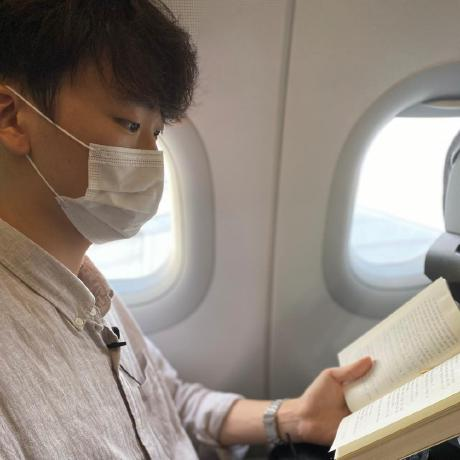

<section class="aboutme">
    <div class="post_content">
        
        <h3>
            SeungWon Seo
        </h3>
        <p>
            I am an undergraduate researcher working in the IIIXR Lab at Kyunghee University, advised by Dr. HyeongYeop Kang.
        </p>
        <hr/>
        <h3>
        Research Fields
        </h3>
            <p>
            - VR Experience <br>
            - Character Animation
        </p>    

        <hr/>
        <h3>
            Education
        </h3>
        <p>
            B.S., Software convergence, Kyung Hee University, 2020.03 -
        </p>
        <hr/>
        <h3>
            Awards
        </h3>
        <li><a href="https://github.com/ssw03270/NCF2022-platform-talking-potato">2022 NC Fellowship Neural Graphics Track - Top Prize</a></li>
        <li><a href="https://github.com/ssw03270/Hacker">2021 Realistic Media Game Competition - Top Prize</a></li>
        <li><a href= https://youtu.be/tsWE5IqoHi8>2021 Pearl Abyss × KHUSWC Scholarship</a></li>
        <li><a href="https://swf.khu.ac.kr/swfest_etc_2020/70">2020 KHU SW Festival - Junior Award</a></li>
        <li><a href="https://swf.khu.ac.kr/swfest_dataAnalysis_2020/49">2020 KHU SW Festival - Junior Award</a></li>
       
        <hr/>
        <h3>
            Activities
        </h3>
        <p>
            <li>IIIXR Lab ; Undergraduate Researcher (2021.12. ~ Recent)</li>
            <li>Ludens ; Vice Chairman (2021.07. ~ Recent)</li>
            <li>Kyunghee University, Software Membership (2021.06.6 ~ 2021.12.21)</li>
            <li>2021 Student Council of Dept. of Software Convergence; Chairman (2021.01. ~ 2021.12)</li>
            <li>2020 Student Council of Dept. of Software Convergence (2020.09. ~ 2020.11)</li>
            <li>SWTUBE ; filming department (2020.02. ~ 2022.02)</li>
        </p>
    </div>
</section>
